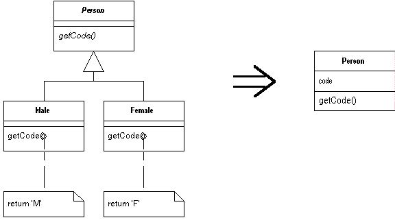

Replace Subclass with Fields
You have subclasses that vary only in methods that return
constant data.
Change the methods to superclass fields and eliminate
the subclasses.

For more information see page
232
of Refactoring
| Refactoring Home | | Alphabetical List |